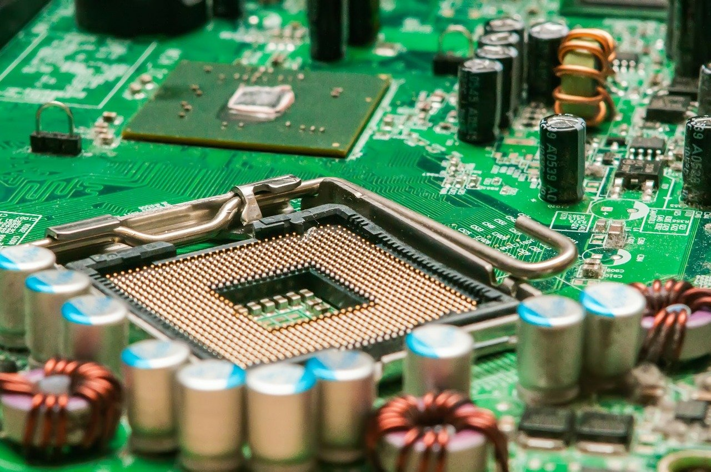

Programmation C
Architecture des ordinateurs

HTML CSS

J'ai des connaissances en programmation C ou j'ai eu à réaliser des projets et des programmes bien fonctionnel.
Cliquez ici pour voir mon programme
Voir le codeDans cette discipline , j'ai appris à bien me servir de l'ordinateur. En effet, j'ai aussi compris à travers cette formation les différents role des composants d'un ordinateur.
J'ai aussi appris a craqué les mots de pass et à installer des logistiels.

En HTML et CSS je dirai que après le cour de Mr Kini je eu un peu de connaissance.
Si je pratique tous les jours je croix que je deviendrai un des meilleur.